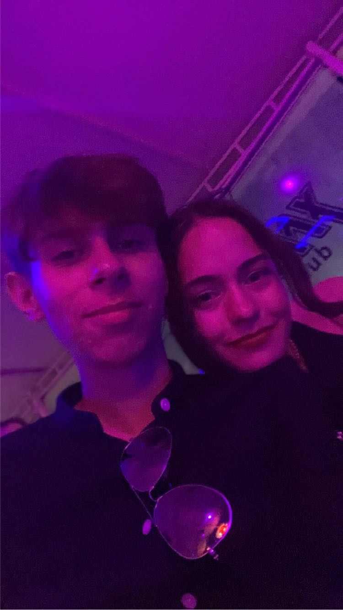

2 septembrie 2024
Discoteca Max
💜 Te iubesc pentru ca imi oferi liniste 💜
Ti-am exprimat norocul meu din multe puncte de vedere. Insa pe lângă toate celelalte, mai am unul de spus. Ma simt atât de fericit si norocos cand realizez ca nu
a trebuit sa ma îndoiesc niciodată in privința ta. Orice vorba am auzit, orice am văzut, mereu ai fost ultima persoana pe care aș fi pus-o la îndoială. Pana si
noaptea in club cu iubita mea, experiența de care se tem toți băieții, a fost una dintre cele mai distractive si cele mai faine. In toată mulțimea aia am fost
doar tu si eu. Am dansat, am băut si ne-am simțit bine, cum facem mereu.